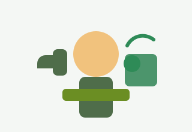

Front-End Development
I create clean, responsive webpages that balance visual polish with strong accessibility standards.
Digital Storyteller
I build thoughtful digital experiences
I am a web developer and content-focused creator who helps organizations share their work in ways that are welcoming, informative, and easy to use across devices. My work blends front-end design, user experience, and practical problem solving.

I create clean, responsive webpages that balance visual polish with strong accessibility standards.
I shape messaging so visitors understand the why behind a project and quickly connect with the mission.
I focus on usability and inclusion so digital experiences are easier for everyone to navigate and enjoy.
“Good design does not just look polished; it helps people feel informed, welcome, and confident.”